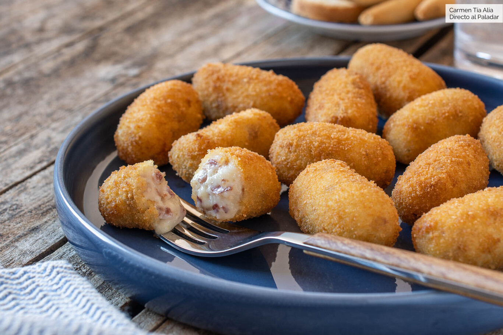
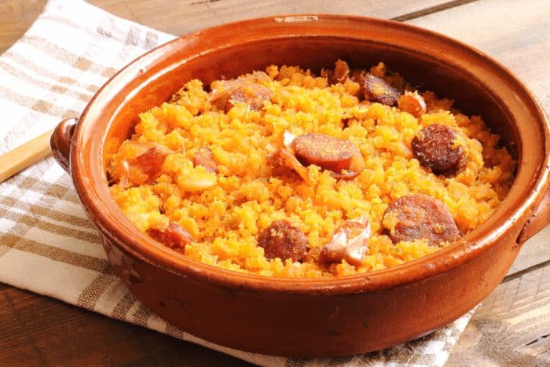
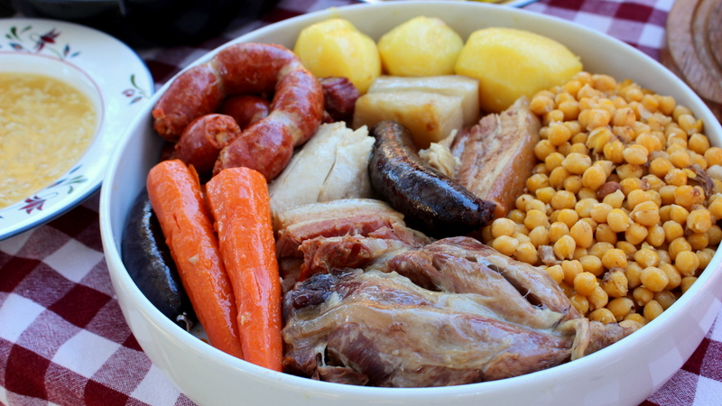

TOP 5 MEJORES COMIDAS ESPAÑOLAS DE LA HISTORIA
Bienvenidos a mi tier list de
mejores comidas tradicionales de españa de toda la historia
Sin más que decir, comencemos:
| NOMBRE |
IMAGEN |
LINK ACCESO |
| Croquetas |
 |
Receta |
| Bocata de calamares |
|
Receta |
| Migas al pastor |
 |
Receta |
| Cocido madrileño |
 |
Receta |
| Flamenquines Cordobenses |
|
Receta |